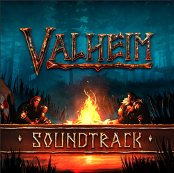

音乐
本站支持中英文站内搜索。带 ↗ 的链接指向外部网站；各页来源版本见页脚。


英灵神殿拥有由瑞典及澳大利亚作曲家帕特里克·亚尔斯坦（Patrik Jarlestam）[ 1 ]创作的原创原创原声音乐。此外还包含两首由丹尼斯·菲拉托夫（Dennis Filatov）和伊内兹·孔蒂奥（Inez Kontio）组成的二人组合Ghostwood Empire[ 2 ]创作并演奏的附加曲目。
根据用户设置，音乐会间歇作为环境音乐播放，或持续播放。
自2021年十月起，原声音乐可通过购买获取，也可在多个主流平台上流媒体播放。[ 3 ]
音轨列表
英灵神殿（游戏原创原声音乐） 由以下部分组成:
| # | 名称 | 作曲家 | 持续时间 |
|---|---|---|---|
| 盘片1 | |||
| 1 | 欢迎来到英灵神殿——菜单主题曲 | 帕特里克·亚尔斯坦 | 3:38 |
| 2 | 飞入英灵神殿 | 帕特里克·亚尔斯坦 | 1:40 |
| 3 | 青青草原——休憩之所 | 帕特里克·亚尔斯坦 | 3:40 |
| 4 | 家——享受生活的地方 | 帕特里克·亚尔斯坦 | 3:04 |
| 5 | 黎明到达 | 帕特里克·亚尔斯坦 | 0:33 |
| 6 | 黄昏垂下帷幕 | 帕特里克·亚尔斯坦 | 0:46 |
| 7 | 赤血灵鹿驰骋 | 帕特里克·亚尔斯坦 | 2:52 |
| 8 | 黑暗林山——黑暗 | 帕特里克·亚尔斯坦 | 3:25 |
| 9 | 森林墓穴 | 帕特里克·亚尔斯坦 | 4:24 |
| 10 | 森林正在移动 | 帕特里克·亚尔斯坦 | 1:28 |
| 11 | 古树长老苏醒 | 帕特里克·亚尔斯坦 | 2:16 |
| 12 | 出海探险 | 帕特里克·亚尔斯坦 | 4:33 |
| 13 | 北境平原——农庄 | 帕特里克·亚尔斯坦 | 2:56 |
| 14 | 邪骨恶灵亵渎 | 帕特里克·亚尔斯坦 | 2:10 |
| 15 | 沼泽——沉没的水域 | 帕特里克·亚尔斯坦 | 5:09 |
| 16 | 凛冽雪山——高地 | 帕特里克·亚尔斯坦 | 4:01 |
| 17 | 冰霜龙母守护 | 帕特里克·亚尔斯坦 | 2:03 |
| 18 | 亚格鲁斯统治 | 帕特里克·亚尔斯坦 | 3:29 |
| 19 | 德雅·萨加 | 鬼木帝国 | 2:22 |
| 20 | 家与灶 | 鬼木帝国 | 1:47 |
| 盘片2 | |||
| 21 | 凛冽雪山——赤红内殿 | 帕特里克·亚尔斯坦、马林·维克布拉德 | 0:56 |
| 22 | 迷雾之地——揭开遥远的记忆 | 帕特里克·亚尔斯坦、弗蕾娅·沙克-阿诺特、金齐·亚历山大-斯沃顿、马蒂亚斯·汉斯科夫·帕尔姆、菲莉帕·墨菲-黑斯特 | 11:27 |
| 23 | 迷雾之地——矮人挖掘场：挖掘过去 | 帕特里克·亚尔斯坦、菲莉帕·墨菲-黑斯特 | 1:54 |
| 24 | 迷雾之地——矮人塔：酝酿魔法 | 帕特里克·亚尔斯坦、菲莉帕·墨菲-黑斯特 | 1:31 |
| 25 | 迷雾之地——向蛊虫之后跪拜 | 帕特里克·亚尔斯坦 | 2:23 |
| 26 | 迷雾之地——向蛊虫之后跪拜：环境音乐 | 帕特里克·亚尔斯坦 | 3:01 |
| 27 | 青青草原——村庄与农场：人间生活的一声轻叹 | 帕特里克·亚尔斯坦、金齐·亚历山大-斯沃顿、弗蕾娅·沙克-阿诺特、马蒂亚斯·汉斯科夫·帕尔姆、菲莉帕·墨菲-黑斯特 | 1:51 |
| 28 | 灰矮人营地——冒烟的泥土、苔藓与骸骨 | 帕特里克·亚尔斯坦、弗蕾娅·沙克-阿诺特、马蒂亚斯·汉斯科夫·帕尔姆、菲莉帕·墨菲-黑斯特 | 2:05 |
| 29 | 霍尔德与海尔司坦的漫游冒险 | 帕特里克·亚尔斯坦、戴维·埃里克松、弗蕾娅·沙克-阿诺特 | 3:09 |
| 30 | 丑地精营地——遭受袭击的族群 | 帕特里克·亚尔斯坦、弗蕾娅·沙克-阿诺特 | 1:24 |
| 31 | 凛冽雪山- 被废弃的小屋 | 帕特里克·亚尔斯坦、菲莉帕·墨菲-黑斯特、马蒂亚斯·汉斯科夫·帕尔姆 | 1:31 |
| 32 | 北境平原——巨石阵：晨间黑暗之石 | 帕特里克·亚尔斯坦、弗蕾娅·沙克-阿诺特、菲莉帕·墨菲-黑斯特 | 1:07 |
| 33 | 黑暗林山 - 阴燃之墓 | 帕特里克·亚尔斯坦、弗蕾娅·沙克-阿诺特 | 2:15 |
| 34 | 凛冽雪山 - 哀啸之穴 | 帕特里克·亚尔斯坦、弗蕾娅·沙克-阿诺特 | 2:01 |
| 35 | 北境平原 - 封印之塔 | 帕特里克·亚尔斯坦、弗蕾娅·沙克-阿诺特 | 2:31 |
| 36 | 希尔德的服装小店 | 帕特里克·亚尔斯坦、戴维·埃里克松 | 1:48 |
| 37 | 航向灰烬之地的危险 | 帕特里克·亚尔斯坦、弗蕾娅·沙克-阿诺特、贝丝·康登、迈克尔·H·迪克森、马蒂亚斯·汉斯科夫·帕尔姆 | 4:05 |
| 38 | 灰烬之地——烈火重塑 | 帕特里克·亚尔斯坦、弗蕾娅·沙克-阿诺特、贝丝·康登、安娜·库珀、妮可拉·贝尔、迈克尔·H·迪克森、马蒂亚斯·汉斯科夫·帕尔姆 | 18:34 |
| 39 | 灰烬之地废墟1——每个选择都由石头铸成 | 帕特里克·亚尔斯坦、弗蕾娅·沙克-阿诺特、贝丝·康登、安娜·库珀、妮可拉·贝尔、迈克尔·H·迪克森、马蒂亚斯·汉斯科夫·帕尔姆 | 2:30 |
| 40 | 灰烬之地废墟2——高高翱翔，低低落下 | 帕特里克·亚尔斯坦、弗蕾娅·沙克-阿诺特、贝丝·康登、安娜·库珀、迈克尔·H·迪克森、马蒂亚斯·汉斯科夫·帕尔姆 | 2:35 |
| 41 | 灰烬之地废墟3——献给曾在此生活的所有人 | 帕特里克·亚尔斯坦、弗蕾娅·沙克-阿诺特、贝丝·康登、安娜·库珀、妮可拉·贝尔、迈克尔·H·迪克森、马蒂亚斯·汉斯科夫·帕尔姆 | 2:42 |
| 42 | 灰烬之地堡垒——这些石头见证的，比大多数人一生所见更多 | 帕特里克·亚尔斯坦、弗蕾娅·沙克-阿诺特、贝丝·康登、安娜·库珀、迈克尔·H·迪克森、马蒂亚斯·汉斯科夫·帕尔姆 | 2:52 |
| 43 | 青焰龙王召唤 | 帕特里克·亚尔斯坦、J.R.肯辛顿 | 2:46 |
| 44 | 沼泽女巫之舞 | 帕特里克·亚尔斯坦、巴勃罗·索里韦斯·伯恩哈德、弗雷迪·克卢 | 5:50 |
参考资料
| 攻略 | |
|---|---|
| 玩家 | |
| 战斗 | |
| 生成 | |
| 建材 | |
| 界面 | |
| 世界 | |
| 杂项 | |
| 开发 | |
Valheim features its own original soundtrack written by Patrik Jarlestam[1], a Swedish/Australian composer. It also features two bonus tracks composed and performed by the duo Ghostwood Empire[2], consisting of Dennis Filatov and Inez Kontio.
Music either plays ambiently or continuously depending on user setting.
Since October 2021, the soundtrack available for purchase and streaming on several major platforms.[3]
Track listing
Valheim (Original Game Soundtrack) consists of:
| # | Name | Composer | Duration |
|---|---|---|---|
| Disc 1 | |||
| 1 | Welcome To Valheim - Menu Theme | Patrik Jarlestam | 3:38 |
| 2 | Flight Into Valheim | Patrik Jarlestam | 1:40 |
| 3 | The Meadows - A Place To Rest | Patrik Jarlestam | 3:40 |
| 4 | Home - A Place To Enjoy | Patrik Jarlestam | 3:04 |
| 5 | Dawn Arrives | Patrik Jarlestam | 0:33 |
| 6 | Dusk Sends Its Veil | Patrik Jarlestam | 0:46 |
| 7 | Eikthyr Rides | Patrik Jarlestam | 2:52 |
| 8 | Black Forest - The Darkness | Patrik Jarlestam | 3:25 |
| 9 | The Forest Crypt | Patrik Jarlestam | 4:24 |
| 10 | The Forest Is Moving | Patrik Jarlestam | 1:28 |
| 11 | Elder Awakens | Patrik Jarlestam | 2:16 |
| 12 | Out For A Sailing Adventure | Patrik Jarlestam | 4:33 |
| 13 | The Plains - Farmstead | Patrik Jarlestam | 2:56 |
| 14 | Bonemass Defiles | Patrik Jarlestam | 2:10 |
| 15 | The Swamps - Sunken Water | Patrik Jarlestam | 5:09 |
| 16 | The Mountains - High Territory | Patrik Jarlestam | 4:01 |
| 17 | Moder Protects | Patrik Jarlestam | 2:03 |
| 18 | Yagluth Reigns | Patrik Jarlestam | 3:29 |
| 19 | Deya Saga | Ghostwood Empire | 2:22 |
| 20 | Hearth And Home | Ghostwood Empire | 1:47 |
| Disc 2 | |||
| 21 | Mountains - The red inner sanctum | Patrik Jarlestam, Malin Wikblad | 0:56 |
| 22 | Mistlands - Unveiling distant memories | Patrik Jarlestam, Freya Schack-Arnott, Kinzey Alexander-Swatton, Mattias Hanskov Palm, Phillippa Murphy-Haste | 11:27 |
| 23 | Mistlands - Dvergr Excavation Site - Unearthing the past | Patrik Jarlestam, Phillippa Murphy-Haste | 1:54 |
| 24 | Mistlands - Dvergr Tower - Magic brewing | Patrik Jarlestam, Phillippa Murphy-Haste | 1:31 |
| 25 | Mistlands - Kneel to The Seeker Queen | Patrik Jarlestam | 2:23 |
| 26 | Mistlands - Kneel to The Seeker Queen - ambient | Patrik Jarlestam | 3:01 |
| 27 | Meadows - Village & Farm - A sigh of human life | Patrik Jarlestam, Kinzey Alexander-Swatton, Freya Schack-Arnott, Mattias Hanskov Palm, Phillippa Murphy-Haste | 1:51 |
| 28 | Greydwarf Camp - Smoking soil, moss and bones | Patrik Jarlestam, Freya Schack-Arnott, Mattias Hanskov Palm, Phillippa Murphy-Haste | 2:05 |
| 29 | The wandering adventures of Haldor and Halstein | Patrik Jarlestam, David Eriksson, Freya Schack-Arnott | 3:09 |
| 30 | Fuling Encampment - The horde under attack | Patrik Jarlestam, Freya Schack-Arnott | 1:24 |
| 31 | Mountains - Abandoned Cottages | Patrik Jarlestam, Phillippa Murphy-Haste, Mattias Hanskov Palm | 1:31 |
| 32 | Plains - Stone Henges - Stones of Morning Darkness | Patrik Jarlestam, Freya Schack-Arnott, Phillippa Murphy-Haste | 1:07 |
| 33 | Black Forest - Smouldering Tomb | Patrik Jarlestam, Freya Schack-Arnott | 2:15 |
| 34 | Mountains - Howling Cavern | Patrik Jarlestam, Freya Schack-Arnott | 2:01 |
| 35 | Plains - Sealed Tower | Patrik Jarlestam, Freya Schack-Arnott | 2:31 |
| 36 | Hildir's tiny emporium of costume changes | Patrik Jarlestam, David Eriksson | 1:48 |
| 37 | The Dangers of sailing to Ashlands | Patrik Jarlestam, Freya Schack-Arnott, Beth Condon, Michael H Dixon, Mattias Hanskov Palm | 4:05 |
| 38 | Ashlands - Transformed by Fire | Patrik Jarlestam, Freya Schack-Arnott, Beth Condon, Anna Cooper, Nicola Bell, Michael H Dixon, Mattias Hanskov Palm | 18:34 |
| 39 | Ashlands' Ruins 1 - Where every choice was made of stone | Patrik Jarlestam, Freya Schack-Arnott, Beth Condon, Anna Cooper, Nicola Bell, Michael H Dixon, Mattias Hanskov Palm | 2:30 |
| 40 | Ashlands' Ruins 2 - Soaring high, come laying low | Patrik Jarlestam, Freya Schack-Arnott, Beth Condon, Anna Cooper, Michael H Dixon, Mattias Hanskov Palm | 2:35 |
| 41 | Ashlands' Ruins 3 - For all who lived here | Patrik Jarlestam, Freya Schack-Arnott, Beth Condon, Anna Cooper, Nicola Bell, Michael H Dixon, Mattias Hanskov Palm | 2:42 |
| 42 | Ashlands' Fortress - These stones have witnessed more than most ever will | Patrik Jarlestam, Freya Schack-Arnott, Beth Condon, Anna Cooper, Michael H Dixon, Mattias Hanskov Palm | 2:52 |
| 43 | Fader Beckons | Patrik Jarlestam, J.R. Kensington | 2:46 |
| 44 | The Dance Of The Witch In The Bog | Patrik Jarlestam, Pablo Sorribes Bernhard, Fredy Clue | 5:50 |
References
| Guides | |
|---|---|
| Player | Player • Health • Stamina • Eitr • Adrenaline • Death • Forsaken power • Skills • Status effects • Movement speed • Magic • Fishing • Riding • Sleeping • Emotes |
| Combat | |
| Spawning | |
| Building | |
| UI | |
| World | |
| Misc | |
| Development | |